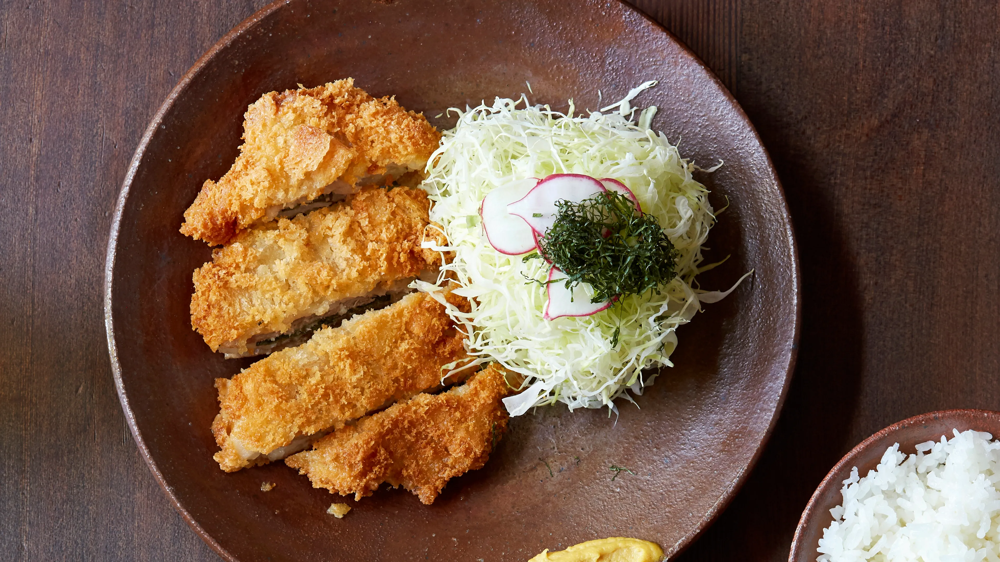

Tonkatsu

Description
Tonkatsu can be so good. When the pork is sweet and juicy and the panko is perfectly fluffy and crisp, it’s a real treat. Done poorly (as, sadly, is often the case), it’s a minor tragedy. Restaurants specializing in tonkatsu are a genre of their own in Japan, and at a good one, you can order hire-katsu, which is made with pork tenderloin, or rosu-katsu, which is made with pork loin. You can also often choose between different breeds of pork. With tonkatsu there is relatively little room for error. Like a pork chop, the meat must be cooked through but just barely so, or all the vital juices will escape into your frying oil, and the tonkatsu will become dry.
Ingredients
- 2 quarts canola or other neutral oil, for frying
- 1 boneless pork loin (about 1½ lb.)
- Sea salt
- 1 garlic clove
- ¼ cup all-purpose flour
- 1 large egg, beaten
- 2½ cups Nama Panko
- Tonkatsu sauce
- Japanese mustard
Steps
- To make nama panko, use a sharp knife to trim the crusts as closely as possible. Cut the denuded loaf into cubes, roughly 1-inch square. In a food processor, pulse a handful of cubes at a time into shaggy breadcrumbs. Don’t overprocess: the larger pieces fry into delightful crunchy bits. Store your processed panko in an airtight container for up to 3 days in the refrigerator or up to a month in the freezer.
- To make snowy cabbage, peel away any brown and bruised leaves. Cut it in half lengthwise, from stem to tip, and trim the end of the stem, but keep the core intact to hold the leaves together as you cut. Using a mandoline, begin by slicing the cut edge the length of the cabbage. The slices should be very fine, and when they emerge from the blade, they should curl like thin ribbons of paper onto your hand. If the slices are rigid and too thick, adjust the mandoline a couple of turns thinner. This is not like making coleslaw (although a mandoline is handy for that, too). Once you’ve sliced to the core on one side, rotate the cabbage and slice from the other side. At the end, you should have only the core and a small wedge of cabbage left. Put the sliced cabbage in a bowl, cover it with cold water, and let it sit for ten minutes. Although the soak in cold water does wash away some of the sweetness, it also crisps it up and removes much of the sulfurous odor. Drain well and store the snowy cabbage, covered, in an airtight container in the refrigerator for up to a day.
- In a large Dutch oven or heavy-bottomed pot over medium-high heat, heat the oil until it registers 310°F on an instant-read thermometer. Set a wire rack over a rimmed sheet pan.
- Place the loin on a cutting board and trim the layer of fat covering the loin to no more than a ½-inch thickness; discard the fat or save for another use. Using a sharp knife, slice the loin into ½-inch thick cutlets, approximately 5 inches long and 3 inches wide at the thickest point. Lightly salt each cutlet on both sides. Cut the clove of garlic in half and rub each cutlet on both sides with the cut side of the garlic.
- Place the flour, egg, and panko in three separate shallow dishes. Working with one piece of pork at a time, dredge the pork in the flour. Make sure the entire surface is covered and shake off any excess. Next, dip it in the egg mixture, turning to coat completely. Then drop the egg-dipped pork into the panko.
- When the oil is hot, slide two of the katsu into the oil. With a fine-mesh strainer, immediately scoop up the loose panko bits that float to the surface of the oil. Adjust the heat to maintain the oil temperature at approximately 310°F and fry for 2 minutes. Using tongs or chopsticks, turn the katsu over and fry for another 2 minutes on the other side. Continue cooking, flipping very 2 minutes, until the katsu has cooked for 7 to 8 minutes. When the katsu is nearly cooked, it will start to sit higher in the oil, the bubbles surrounding it will become smaller, and the panko will turn golden brown. Using the tongs, remove the tonkatsu from the oil and set it on the wire rack to drain. Allow the oil to return to temperature and repeat with the remaining katsu.
- To serve, cut the tonkatsu in six to eight slices and serve with the snowy cabbage, tonkatsu sauce, and hot Japanese mustard alongside.